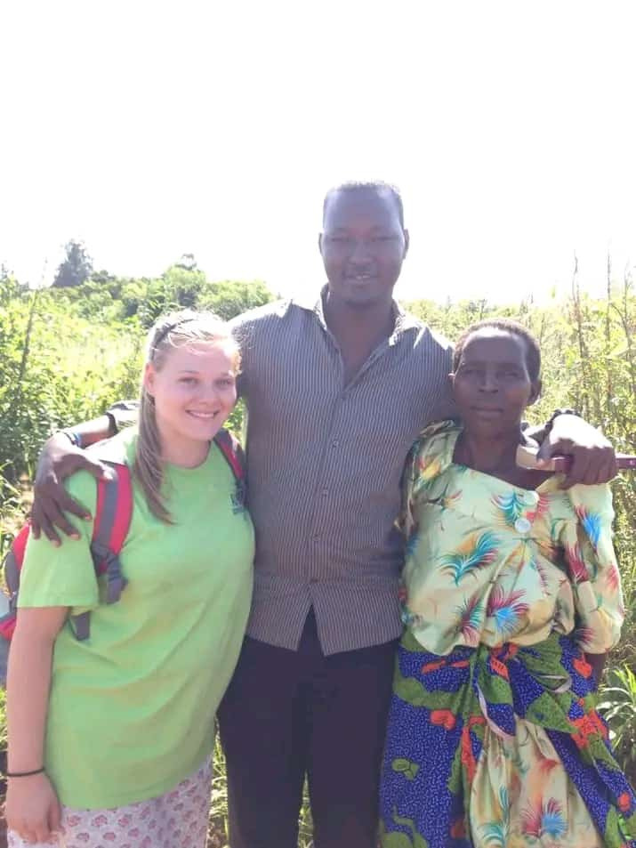
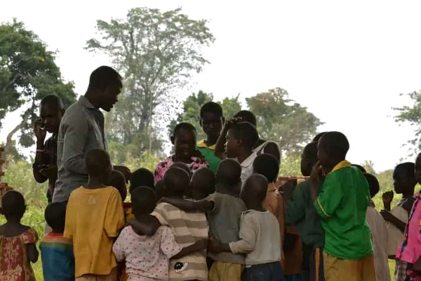
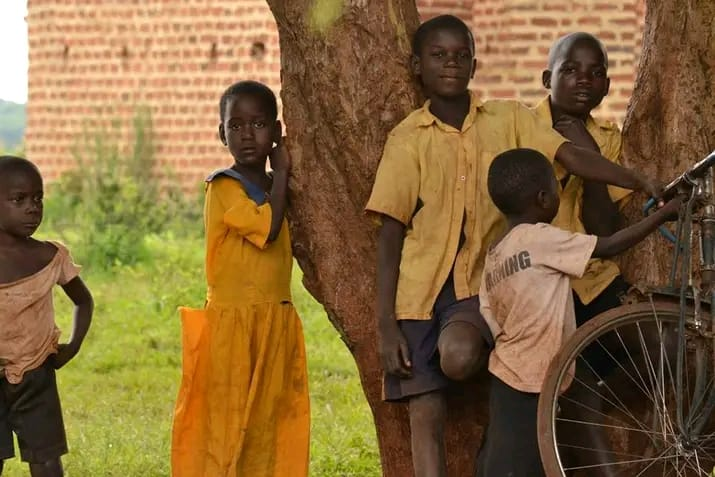
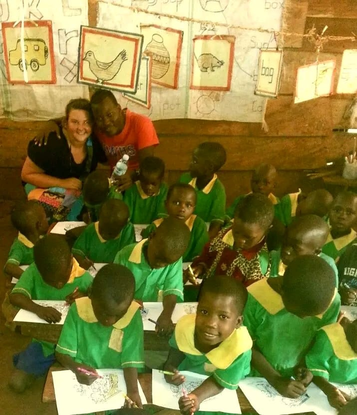
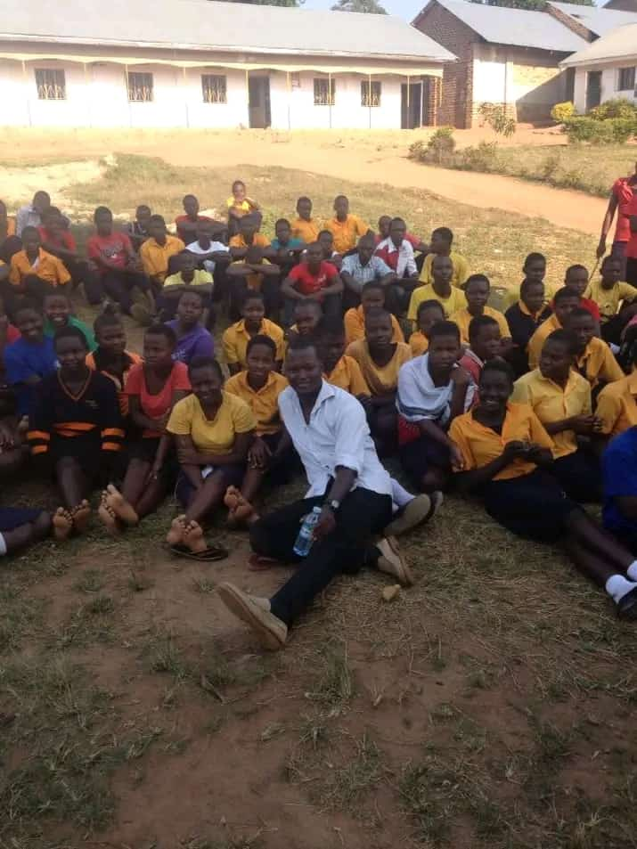

Who We Are
More Than Just An Organization
At The Caring Nest, we are more than just an organization; we are a family. We are a community of dedicated individuals working together to build a better tomorrow for the most vulnerable among us. We believe that by working together, we can create a world where everyone has the opportunity to thrive.
Learn More
Our Core Services
We believe every child deserves a loving and nurturing environment. Our core services are designed to meet the physical, emotional, and educational needs of each child in our care. From providing nutritious meals and comfortable housing to offering educational support and emotional counseling, we strive to create a place where children can thrive. Learn more about our specific programs below.

Senior Care Homes
Empowering the Community: The Opening of Our Local School

At The Caring Nest, we believe that education is the foundation for a brighter future. That’s why we are proud to announce the opening of our new community school, a project that will provide quality education to both the children in our orphanage and the surrounding local community.
A Vision for Education
For years, many children in our area faced challenges in accessing formal education due to distance, financial barriers, or lack of resources. Recognizing this need, we embarked on a mission to build a school that would serve as a beacon of hope and learning. Thanks to the support of generous donors, volunteers, and local leaders, this dream has become a reality.
The Grand Opening Event
On February, 2018, we celebrated the official opening of the school with an inspiring event attended by community members, educators, and special guests. The day was filled with joy, speeches, and performances from our children, who now have the opportunity to learn in a safe and nurturing environment. A ribbon-cutting ceremony marked the beginning of a new chapter, symbolizing endless possibilities for the young minds who will walk through the school's doors.



Join Us in Changing Lives
The journey doesn’t end here! We continue to seek support to expand our programs, provide school supplies, and offer scholarships. If you would like to contribute to this initiative, consider donating, volunteering, or sponsoring a student today. 📩 Contact Us to learn how you can be part of this transformative movement. Together, we can build a future where every child has the opportunity to learn and thrive